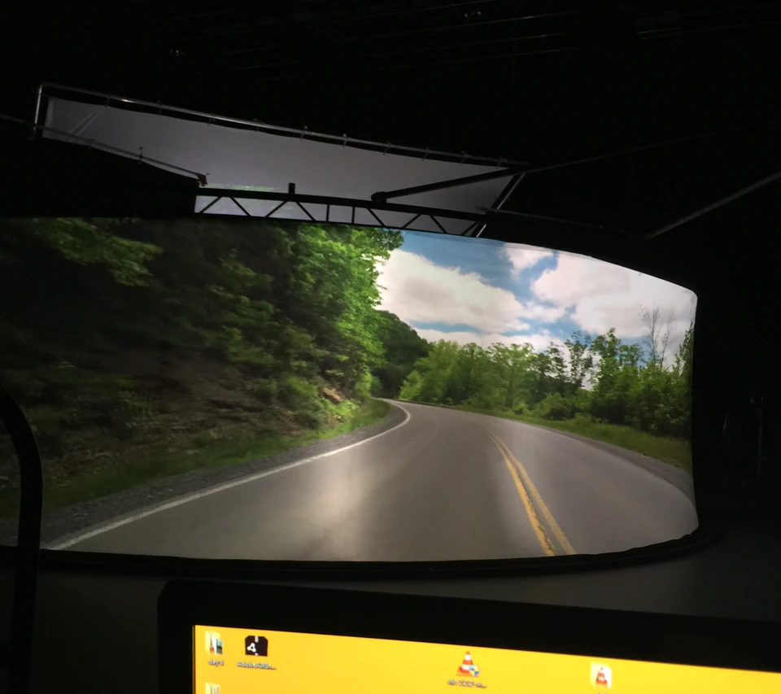

Molecule / Concepts for review
{ PROJECT IMAGES }
The same three Glass Castle photographs in three quiet treatments. These are proposals, separate from the portfolio.
A / Quiet stepper Recommended default
One photograph. A count and two small controls below it.
THE GLASS CASTLE
Paper Ghost / Professional Work

Keeps the opening photograph dominant. Each project starts on its strongest image. Nothing advances automatically.
B / Small contact strip
Three visible thumbnails make the extra views easy to find.
THE GLASS CASTLE
Paper Ghost / Professional Work
Best reserved for a large lead project. Repeating a thumbnail strip under every card would add too much visual texture.
C / Named views
The controls tell readers what the next photograph explains.
THE GLASS CASTLE
Paper Ghost / Professional Work
Useful where the software contribution needs explaining. The same idea could become “Tool / In use” for mother! or “SDK / Blender / Demo” for Enflux.